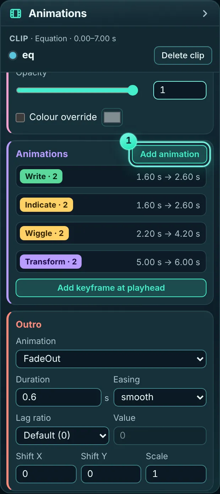
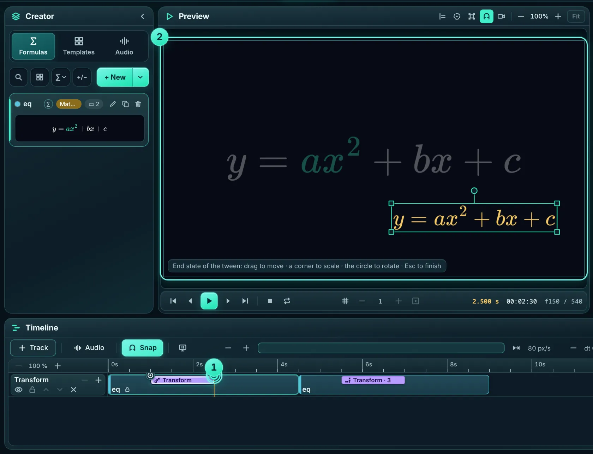
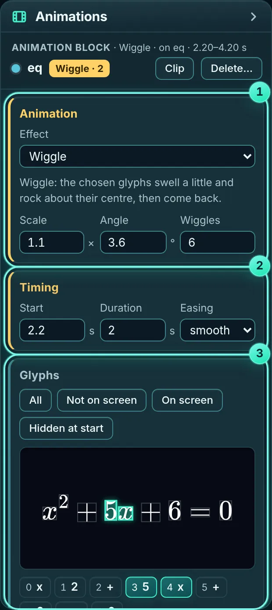
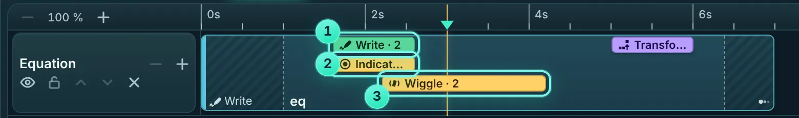
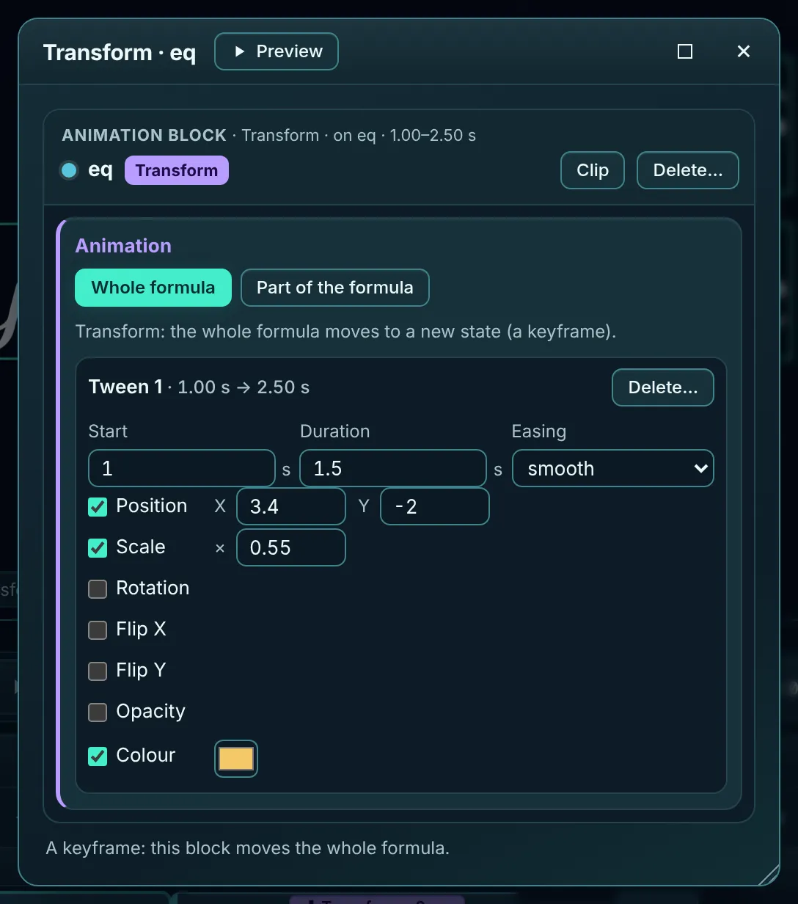
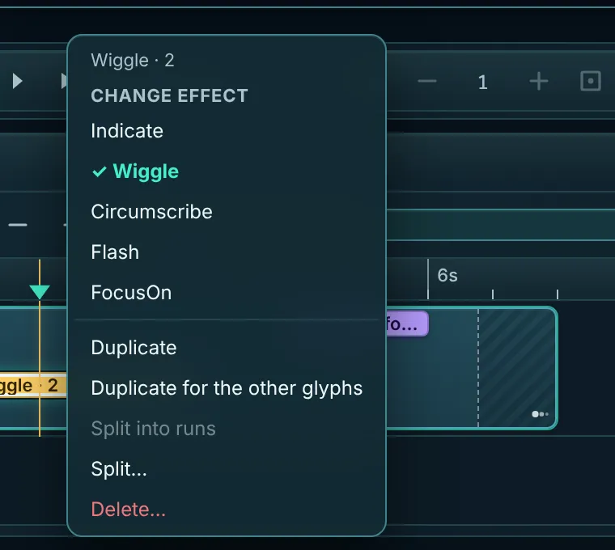

Animation blocks
A clip appears with an intro and leaves with an outro. Between the two, blocks animate it: a term arrives, another lights up, a line turns into the next. Each block is one animation, on some glyphs, for some seconds.
What a block is
A block is a coloured bar in the upper part of a clip on the timeline. It carries the icon of its animation, then its name and the number of glyphs it acts on: Wiggle · 2. A block too short for its name shows the icon alone; point at it and its tooltip gives the name. It has a start, a length in seconds, an easing, and, for most blocks, the glyphs it animates.
Two other kinds of animation are not blocks. A clip’s intro and outro are the hatched ends of the clip (see Appearing and disappearing), and a relation carries glyphs from one clip into another (see How relations work).
Blocks come in five families, each with its own colour on the timeline.
| Family | What it does, and what it acts on |
|---|---|
| Appear | Brings glyphs on screen: Write, Create, FadeIn, GrowFromCenter, DrawBorderThenFill. It acts on the glyphs you pick. |
| Disappear | Takes glyphs off screen: FadeOut, Unwrite, Uncreate, ShrinkToCenter. It acts on the glyphs you pick. |
| Transform | Moves, scales, turns or recolours the whole formula, or some of its glyphs, the ones you pick. |
| Morph | Turns glyphs of the formula into other glyphs of the same formula, in pairs that you choose. |
| Emphasis | Draws attention to glyphs for a moment and leaves them as they were: Indicate, Wiggle, Circumscribe, Flash, FocusOn. It acts on the glyphs you pick. |
Adding a block
From the timeline
Put the playhead at the moment the animation should start (click the ruler there), then right-click the clip, in a place where no block lies. The Add animation menu opens. Its header says which clip it is for and where the block will start: at the playhead, with its time. When the playhead is not on the clip, the block starts where you clicked instead, and the header says so: the playhead is outside this clip.
The block lasts as long as its animation does by default: one second for most, two for DrawBorderThenFill, Wiggle and FocusOn. If other animations of its glyphs are in the way, it goes to the nearest free time, shortened when it must be. When it was to start at the playhead, a notice, No room at the playhead, says where it starts and what was in the way: the intro, another block, or the end of the clip. If there is no room at all, a notice says why and nothing is added.
From the Animations panel
Select the clip, open the Timing tab and press Add animation in the Animations section: the same menu opens, for the time the playhead is at, wherever the playhead is. The section lists the clip’s blocks below the button.

From the keyboard, Tab reaches a clip on the timeline, and Shift+F10 (or the Menu key) opens the same menu: at the playhead when it is on the clip, else at the clip’s start.
In a region of the timeline
To say when a block starts and when it ends before making it, mark a region on the timeline’s ruler first. While a region is marked, a block added from either menu takes it whole, wherever the playhead is: it starts where the region starts and lasts until it ends. The header of the menu says so: region 1.00–3.00 s.
A block that does not fit in the region is not added, and a notice says why: the clip does not hold the region, or other animations of its glyphs are in it. Nothing moves the block to a free time nearby. Move the region, or remove it with Esc to add at the playhead again.
Which glyphs a new block takes
A new Appear or Disappear block takes every glyph it can: all the glyphs that wait to arrive, or all those on screen. Added where other blocks already run, it names only the glyphs they leave, so moving either block later changes nothing for the other.
The blocks, one by one
Every card plays a few seconds of a small example while it is on screen. Press a card to pause it, and drag its time bar to look at a moment closely. Each family ends with the project behind its cards, which opens in the app.
Appear: bringing glyphs on screen
An Appear block brings on screen the glyphs it names. They wait off screen until it runs, whether the clip starts with them hidden or not: the intro leaves them alone. A glyph a Disappear took away comes back the same way. In these cards the right side of y = ax^2 + bx + c waits for the block.
-
Write
Draws each glyph stroke by stroke and fills it, one glyph after another. One second, linear. -
Create
Draws each glyph along its outline, one glyph after another. ManimGL calls it ShowCreation. -
FadeIn
Fades all the glyphs in together. Shift X, Shift Y and Scale make them fade in from an offset or at another size. -
GrowFromCenter
Grows the glyphs from the centre of the group, all together. -
DrawBorderThenFill
Draws the outlines of all the glyphs at once, then fills them. Two seconds, double_smooth.
Disappear: taking glyphs off screen
A Disappear block takes off the glyphs it names. A glyph that is not on screen when the block starts is left alone. Here the right side of the same formula goes, and y = stays.
-
FadeOut
Fades the glyphs out together. Shift X, Shift Y and Scale set where they drift to and how large they are at the end. -
Unwrite
Writes backwards: the last glyph is erased first, stroke by stroke. -
Uncreate
Traces the outlines away, one glyph after another, and removes them. -
ShrinkToCenter
Shrinks the glyphs to the centre of the group and removes them.
Transform: moving glyphs
A Transform block has two kinds, and the Animations panel switches a block between them with Whole formula and Part of the formula.
-
Whole formula (keyframe)
Takes the whole formula to a new state: a position, a scale, a rotation, a flip, an opacity, a colour. Only the fields you tick change. -
Part of the formula
Moves chosen glyphs from where they are: a shift, a scale and a rotation about their centre, and a colour and an opacity if you tick them.
A keyframe stays between the end of the intro and the start of the outro. A part of the formula follows the formula if the whole formula moves later.
The Animations section of a clip’s Timing tab has a second button, Add keyframe at playhead. It adds a whole-formula Transform that starts at the playhead and goes to the state the clip has there; you then edit what it goes to. The panel calls each of these a tween, and heads its editor Tween 1, Tween 2 and so on.
You can set where a Transform ends in the Preview, by hand. Select its block: two round icons appear on its top corners. The left one moves the playhead to where the block starts and shows the state it starts from. The right one moves the playhead to where the block ends and lets you move, scale and turn the formula there, or only the glyphs of a part, with the state it starts from drawn faintly beneath. Esc, pressing the icon again, moving the playhead or selecting something else ends the edit.

Morph: one formula becomes the next line
A Morph block turns glyphs of the formula into other glyphs of the same formula, the way a derivation grows line by line. You choose the pairs; the glyphs that arrive through the block skip the intro.
-
Morph within the formula
The second row grows out of copies of the glyphs of the first. The −has nothing to come from, so a Write brings it in.
Morph blocks have their own page, with the pair editor: Morph blocks.
Emphasis: drawing the eye
An Emphasis block acts on the glyphs that are on screen when it starts, and leaves them as they were. Indicate and Wiggle animate the glyphs themselves. Circumscribe, Flash and FocusOn draw something of their own where the glyphs are when the block starts.
Two of these cards have their settings turned up, to make the effect visible in a small card: the Wiggle swells to 1.2 and rocks by 10°, where a new one starts with 1.1 and 3.6°, and the FocusOn disc is gold at 0.35 opacity, where a new one is grey at 0.2.
-
Indicate
The glyphs swell and take a colour, then come back. Scale and Colour are its settings. -
Wiggle
The glyphs swell and rock about their centre, then come back. Scale, Angle and Wiggles set how much and how often. Turned up here to be seen. -
Circumscribe
A rectangle is traced around the glyphs and untraced again. Colour, Gap, Stroke and Time width shape it. -
Flash
Twelve lines shoot out of the centre of the glyphs. Its only setting is the Colour. -
FocusOn
A disc shrinks from the whole frame onto the glyphs, over everything else. Colour and Opacity are its settings. Turned up here to be seen.
The defaults of every block, the ones a new block starts with, are in the table of what a new block starts with.
Choosing the glyphs
Appear, Disappear, Emphasis and a part Transform name the glyphs they act on. The Glyphs section of the Animations panel draws the formula: click a glyph, Shift+click for a range, Ctrl+click to add or remove one, or drag a box over several. A block that names All becomes an explicit list the first time you pick by hand.
Glyphs that are not on screen when the block starts are drawn faint, so you see what the block will find. Four buttons above the formula choose in one press:
- All: every glyph of the formula.
- Not on screen: the glyphs that are not on screen when the block starts, which is what an Appear brings.
- On screen: the glyphs that are on screen then, which is what a Disappear or an Emphasis takes.
- Hidden at start: the glyphs the formula hides at the start and those the clip leaves out of its intro, or every glyph of a clip that starts empty.
Picking glyphs with the pointer in the Preview works for this too: see Picking glyphs.
Timing a block
The fields
Select a block on the timeline: the Animations panel shows it. The Timing section has:
- Start: the second of the scene the block begins at. It cannot be earlier than its clip.
- Duration: how long it lasts, at least 0.05 s.
- Easing: how its speed changes (below).
- Lag ratio, for an Appear or a Disappear: how much later each glyph starts than the one before. Default follows Manim’s own value for the animation; Custom lets you type one in Value. 0 plays all the glyphs together; 1 plays them one after another.
- Shift X, Shift Y and Scale, for FadeIn and FadeOut: where the glyphs fade in from, or out to, and at what size.
The settings of the animation itself are in the Animation section above. An Appear or Disappear has just its Animation menu, so you can change from Write to Create without adding a new block. A part Transform has Shift X, Shift Y, Scale, Rotation, Set opacity and Set colour. An Emphasis has its Effect and the settings of that effect.

What a new block starts with
| Block | Duration | Easing | Settings |
|---|---|---|---|
| Write | 1 s | linear | Lag ratio |
| Create | 1 s | smooth | Lag ratio |
| FadeIn | 1 s | smooth | Lag ratio, shift, scale |
| GrowFromCenter | 1 s | smooth | Lag ratio |
| DrawBorderThenFill | 2 s | double_smooth | Lag ratio |
| FadeOut | 1 s | smooth | Lag ratio, shift, scale |
| Unwrite | 1 s | linear | Lag ratio |
| Uncreate | 1 s | smooth | Lag ratio |
| ShrinkToCenter | 1 s | smooth | Lag ratio |
| Transform, whole formula or part | 1 s | smooth | Position, scale, rotation, flips, opacity, colour |
| Morph | 1 s | smooth | Default style, path arc, pairs |
| Indicate | 1 s | there_and_back | Colour (yellow), scale 1.2 |
| Wiggle | 2 s | smooth | Scale 1.1, angle 3.6°, 6 wiggles |
| Circumscribe | 1 s | smooth | Colour (yellow), gap 0.1, stroke 4, time width 0.3 |
| Flash | 1 s | none: each library’s own tempo | Colour (yellow) |
| FocusOn | 2 s | smooth | Colour (grey), opacity 0.2 |
Easing
An easing is a rate function: it reshapes the speed of a block without changing its length. The curve plots progress against time, so a steep stretch is fast and a flat one is slow. The eight the editor offers are the ones ManimCE and ManimGL share, named as Manim names them.
Click a curve to stop on a moment and see how far along each easing is. ManimCE and ManimGL mean other curves by smooth, and by the functions made of it, so the switch above the cards shows either library’s.
Indicate offers only the two that come back to where they started, marked comes back: there_and_back and there_and_back_with_pause, since it is a pulse. Flash has no easing field at all.
Moving and resizing on the timeline
Drag a block by its body to move it, and by an edge to change its length. It snaps to the ruler’s small ticks, the playhead, the clip’s edges, the end of the intro, the start of the outro, the edges of the clip’s other blocks and the windows of its relations. Hold Shift to move without snapping.
A readout under the block gives its start, its end and its length while you drag, and names the blocks it runs alongside. Where the pointer asks for more than the clip or the other animations allow, the block stops and the readout says why.
With a block selected, Alt+← and Alt+→ move it by one frame, and with Shift by five. A block that is in a group takes the whole group with it.
Blocks at the same time
Blocks on different glyphs can run at the same time. Where they overlap, the timeline gives each its own lane, and the track grows taller to hold them. The block you drag lies on top of the others.

What blocks cannot do is animate the same glyph twice at once. A glyph is busy during the intro, the outro, a relation’s window and any block that animates it; another block cannot take it at the same time. When you drag one into such a clash, it stops short of it.
There is one exception. A Circumscribe, a Flash or a FocusOn only looks at its glyphs when it starts, so it may run while another block moves them. It cannot start while something is still drawing them.
Three commands help to make blocks that run together. Split into runs turns one block into one block for each run of consecutive glyphs, all at the same time. Split… lets you choose the glyphs of each new block. Duplicate for the other glyphs puts a copy beside the block for the glyphs it does not animate. Blocks made this way start together and last the same, so the timeline draws them as a single block: that is a group of animation blocks.
The block dialog
Double-click a block to open its dialog: the fields of the Animations panel with more room, and beside them the formula in large to choose the glyphs. It starts wide, and you can maximise it or drag its corner to resize it; the size is kept for the session. The panel keeps showing the same block, and every edit made in either place is one undo step.
A keyframe and a Morph name no glyphs, so their dialog is narrower, with the fields alone and the same Preview button. A button in the dialog that starts something in the Preview, such as Edit path… of a Morph pair, closes the dialog first, because the dialog would cover what you are about to click.

The menu of a block
Right-click a block for its own menu. An Appear or a Disappear lists the other animations of both families under Change animation; an Emphasis lists its five effects under Change effect. Both keep the block’s time and glyphs.

- Duplicate puts a copy right after the block, in the nearest free time. A Morph’s copy has no pairs, since a glyph arrives through one pair only.
- Duplicate for the other glyphs, Split into runs and Split… make blocks that run together, as above.
- Delete… asks before it deletes.
Ctrl+D duplicates the selected block, and Delete deletes it after a confirmation.
What the export does with blocks
The Python the app writes follows the timeline. Each block becomes a self.play(…) of the Manim animation it names, and every stretch where nothing happens becomes a self.wait(…). Glyphs that wait for an Appear are not added to the scene until it plays. This is the first clip of the Appear example:
self.add(eq_g[0], eq_g[1])
# 0 s – 0.5 s
self.wait(0.5)
# 0.5 s – 1.5 s: eq write
self.play(Write(VGroup(*eq_g[2:])), run_time=1)
# 1.5 s – 4 s
self.wait(2.5)eq_g holds the glyphs of the formula in the editor’s order, so eq_g[2:] is the right side of the equation.
Most blocks use Manim’s own classes, with the names you see in the menus. ManimGL calls Create ShowCreation. Wiggle and Circumscribe are written as small helper classes at the top of the file, so that both libraries do the same thing. A whole-formula Transform is a .animate call on the formula, and a part Transform one on the group of its glyphs.
Manim plays one self.play at a time. Where blocks overlap without starting and ending together, the export cuts the time into slices, one self.play each, and a small helper called _Part plays the right stretch of every block that runs in a slice. The three blocks that start the clip at the top of this page come out like this:
eq_indicate = Indicate(VGroup(eq_g[0], eq_g[1]))
eq_appear = Write(VGroup(eq_g[7], eq_g[8]))
# 1.6 s – 2.2 s: eq indicate, eq write
self.play(_Part(eq_indicate, 0, 0.6), _Part(eq_appear, 0, 0.6), run_time=0.6)
eq_wiggle = _Wiggle(VGroup(eq_g[3], eq_g[4]))
# 2.2 s – 2.6 s: eq indicate, eq write, eq wiggle
self.play(
_Part(eq_indicate, 0.6, 1),
_Part(eq_appear, 0.6, 1),
_Part(eq_wiggle, 0, 0.2),
run_time=0.4,
)The preview and the exported scene agree on what plays and when. The generated Python says how to run it and how close it is to the editor’s preview.
Where to go next
- Groups of animation blocks makes blocks that start together and last the same one group.
- Timing tools covers the menus of a clip, copying and pasting its timing, and splitting a block.
- Morph blocks make a derivation inside one formula, each row grown out of the one above it.